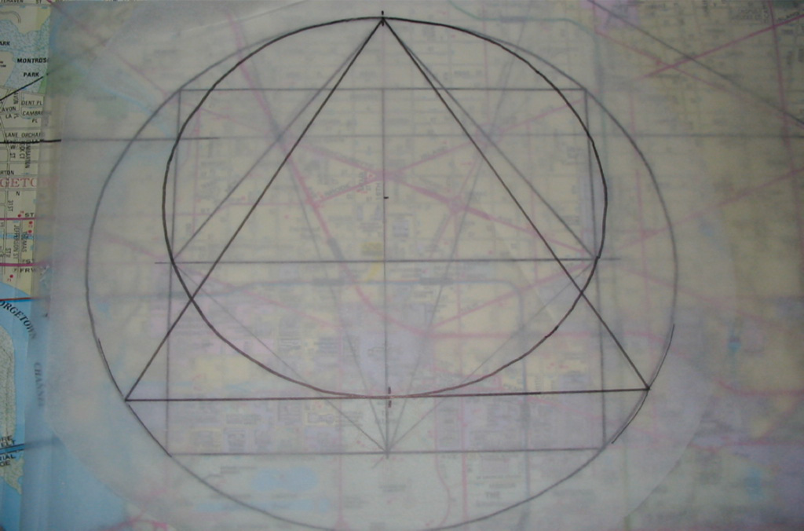

Back to Previous Page
Let us make Circle 2
With a diameter extending from Point A to Point B. If we keep the square formed before, we get this:
Is there a direct connection to Da Vinci?
Let us make Circle 3
With Point A, Washington Circle, and Mt Vernon Square on the circumference.
And superimpose an equalateral triangle:

This pattern repeats.